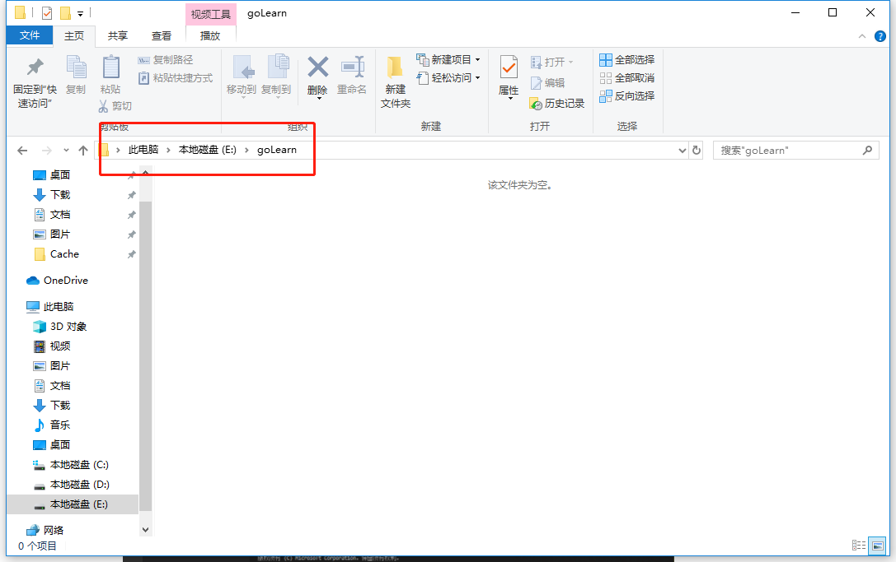

golang下载官网：1. https://golang.google.cn/dl/
然后这里我下载的是当前最新版本go1.13
下载完成之后直接双击安装，然后默认是安装到C盘的C:\Go目录下，当然安装的时候可以更改目录，但是改不改其实无所谓，因为后面创建项目可以通过go mod在别的任意文件夹下创建项目。安装完成之后，win+R快捷键打开cmd窗口，输入
go version查看版本
然后再输入
go env 命令查看一下go相关的环境变量配置
这里注意一下GOROOT和GOPATH这两个环境变量
GOROOT路径是go安装的路径，如果是默认安装的，那就是C:\Go这个路径
GOPATH路径是go的工作空间路径，默认是在%USERPROFILE%/go这个路径下，就是你本机正在使用的用户目录下的go路径，比如我的：
首先如果没有安装vs code并且想用vscode做go语言开发编辑器的同学，那就可以先下载vscode并安装，vscode下载网址：https://code.visualstudio.com/，vscode安装好之后就可以配置环境了。
首先vscode如果想用中文的话可以安装一个中文插件，不想用的话这步可以省略
然后安装go插件
go插件安装成功之后，然后直接按Ctrl+Shift+P，输入>go:install，然后vscode会自动搜索命令，我们选择Go:Install/Update Tools即可：
这一步可能会有一部分工具安装失败的情况，之前装go1.12版本会出现失败的情况，但是1.13版本没遇到，如果出现失败的情况：参考下面这篇文章go扩展安装方法一的解决方法：
https://www.liwenzhou.com/posts/Go/00_go_in_vscode/
如果还不行，具体哪里的问题可以在评论里提，这一步编辑器的环境配置好之后我们就可以去编码了。
1.找一个你向新建项目的目录创建一个文件夹，例如现在我在我的e盘下创建了一个goLearn的文件夹：

然后用vscode打开这个文件夹，并且通过ctrl+·打开控制台窗口，用 go mod init goLearn 命令在当前目录下初始化mod：
然后再在文件夹下新建一个main.go文件，然后写一个Hello World！验证一下环境有没有问题，下面时main.go文件中的代码，然后通过 go run main.go命令运行：
package main
import "fmt"
func main() {
fmt.Println("Hello World!")
}
到这一步Go语言环境就安装完成了，用go mod方式第一个Hello World程序也写成功了。
参考文章：
https://www.liwenzhou.com/posts/Go/00_go_in_vscode/
https://juejin.im/post/5cdd811fe51d45475d5e8e0c
https://zhuanlan.zhihu.com/p/39456054